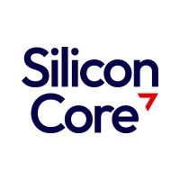
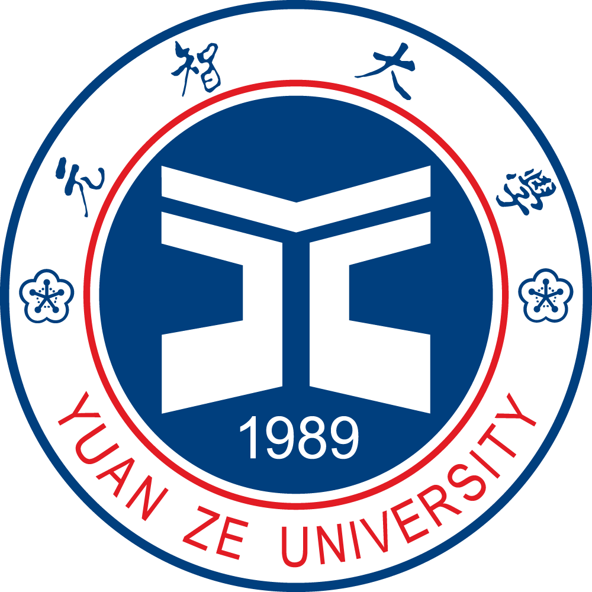

Kuan-Yi Li (Simon Li)
Digital IC Design Engineer @ SCT Ltd. Taiwan Branch

💼 About
Digital IC Design Engineer with a Master’s degree in Electrical Engineering from Yuan Ze University. My work focuses on RTL-based digital IC design and AI-driven hardware acceleration, with hands-on experience translating algorithm-level concepts into hardware-efficient architectures.
Familiar with Verilog RTL design, functional simulation, synthesis, and physical design flows, with solid understanding of timing-aware design and system-level integration.
💻 Technical Skills
🧩 Professional Experience

SCT Ltd. Taiwan Branch — Digital IC Design Engineer- Design and modify RTL modules using Verilog for digital IC systems
- Perform waveform debugging and functional verification in Linux environment
- Support timing-aware RTL development and synthesis-related issue analysis
- Participate in internal bring-up and design validation flows
- Collaborate with cross-functional teams for feature integration
🚀 Selected Projects
Fast-Convergent Deep Reinforcement Learning for Object-Location Prediction (FCDQN)
Impact~76% fewer training iterations while maintaining accuracy
ImplementationVerilog RTL, verified with ModelSim
FlowSynthesis (DC), APR/DRC (ICC), STA under 90nm
Efficiency~75% energy savings & ~20% area reduction vs prior DQN accelerators
Object-Location Prediction Based on CIE Color Difference (OLP-CIE)
Accuracy85.5% location accuracy, 90.4% color identification accuracy
OutcomePresented at IEEE GCCE 2023 (Nara, Japan)
🎓 Education

Yuan Ze UniversityM.S. in Electrical Engineering (2025)
B.S. in Electrical Engineering
📚 Certifications & Training
- TSRI — Cell-Based IC Physical Design and Verification with IC Compiler (21hr)
- 2023 IEEE 12th Global Conference on Consumer Electronics (GCCE 2023) — Nara, Japan
- 2024 International Automatic Control Conference (CASA 2024) — Taoyuan, Taiwan